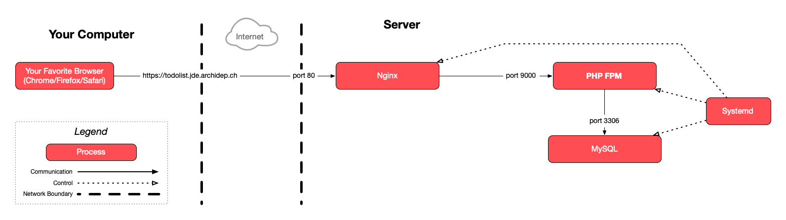

Connect to your cloud server with SSH for this part of the exercise.
Set up an automated deployment with Git hooks
This guide describes how to automatically deploy a PHP application when pushing commits to a server.
It assumes that you have performed the previous [nginx & PHP-FPM exercise]/2026/course/512-nginx-php-fpm-deployment/.
On this page
Table of contents
 Legend
Legend
Parts of this exercise are annotated with the following icons:
-
 A task you MUST perform to complete the exercise
A task you MUST perform to complete the exercise
-
 Optional step that you may perform to make sure that
everything is working correctly, or to set up additional tools that are not required but can
help you
Optional step that you may perform to make sure that
everything is working correctly, or to set up additional tools that are not required but can
help you
-
 Advanced tips on how to go further (or
challenges!)
Advanced tips on how to go further (or
challenges!)
 The end of the exercise
The end of the exercise-
 The architecture of the software you ran or
deployed during this exercise
The architecture of the software you ran or
deployed during this exercise
-
 Troubleshooting tips: how to fix common problems you might
encounter
Troubleshooting tips: how to fix common problems you might
encounter
Set up directories
Create two directories, todolist-automated and todolist-automated-repo, in your home directory:
$> cd
$> mkdir todolist-automated
$> mkdir todolist-automated-repo
The todolist-automated-repo directory will be the Git repository. Later you
will add it as a remote in your local Git repository, so that you can push
commits to it.
The todolist-automated directory will contain the currently deployed version
of the code. The goal is that every time you push commits to the repository,
this directory is automatically updated.
Update the todolist nginx configuration
In previous exercises you configured nginx to serve the PHP application from the
todolist-repo directory. Edit that configuration:
$> sudo nano /etc/nginx/sites-available/todolist
Change todolist-repo to todolist-automated so that nginx looks for files in
the correct directory.
Tell nginx to reload its configuration:
$> sudo nginx -s reload
The site at http://todolist.jde.archidep.ch may not work anymore. You may get a
404 Not Found error from nginx since there are no files in the
todolist-automated directory yet.
Create a bare Git repository on the server
Git will not let you push commits to a normal repository with a working tree, so you need to use a bare repository instead, with only its Git directory:
$> cd ~/todolist-automated-repo
$> git init --bare
Initialized empty Git repository in /home/jde/todolist-automated-repo/
Remember that a Git repository has several parts: the Git directory where the project’s history is stored, and the working tree which contains the current version of the files you are working on.
A bare repository is a repository with only a Git directory and no working tree. The project’s files are not checked out. It’s used mostly on servers for sharing or automation. Read What is a bare repository? for more information.
Add a post-receive hook to the Git repository
Copy this script:
#!/usr/bin/env bash
set -e
echo Checking out latest version...
export GIT_DIR=/home/jde/todolist-automated-repo
export GIT_WORK_TREE=/home/jde/todolist-automated
git checkout -f main
cd "$GIT_WORK_TREE"
echo Deployment successful
This script will take the latest version of the code in the
todolist-automated-repo repository and checkout a working tree in the
todolist-automated directory (the one nginx is serving files out of).
Warning
If your repo has a master branch instead of a main branch, replace main by
master in the git checkout -f main command in your hook.
Normally, when you use the git checkout command in a Git repository, it will
use the .git directory of the repository as the Git directory, and the
repository itself as the working tree.
By setting the GIT_DIR environment variable, you are instructing Git to use a
different Git directory which could be anywhere (in this case, it is the bare
repository you created earlier).
By setting the GIT_WORK_TREE environment variable, you are instructing Git to
use a different directory as the working tree. The files will be checked out
there.
Open the post-receive file in the repository’s hooks directory:
$> nano hooks/post-receive
Paste the contents of the script your copied above.
Replace jde with your username in the GIT_DIR and GIT_WORK_TREE variables.
Exit with Ctrl-X and save when prompted.
Make the hook executable:
$> chmod +x hooks/post-receive
Make sure the permissions of the hook are correct:
$> ls -l hooks/post-receive
-rwxrwxr-x 1 jde jde 239 Jan 10 20:55 hooks/post-receive
It should have the x (execute) permission for owner, group and others.
Add the server’s Git repository as a remote
Disconnect from your cloud server or open another terminal. The following steps happen on your local machine.
Go to the PHP todolist repository on your local machine:
$> cd /path/to/projects/php-todo-ex
As you have already seen with GitHub, Git can communicate over SSH. This is not limited to GitHub: you can define a remote using an SSH URL that points to your own server.
Add an SSH remote to the bare repository you created earlier
(replace jde with your username and W.X.Y.Z with your server’s IP
address):
$> git remote add archidep jde@W.X.Y.Z:todolist-automated-repo
Replace jde with your username and W.X.Y.Z with your server’s public IP
address.
The format of the remote URL is <user>@<ip-address>:<relative-path>.
Git can connect to your server over SSH using public key authentication just
like when you use the ssh command. It will then look for a repository at the
path you have specified, relative to your home directory.
Trigger an automated deployment
From your local machine, push the latest version of the main branch to the remote on your server:
$> git push archidep main
Enumerating objects: 36, done.
Counting objects: 100% (36/36), done.
Delta compression using up to 8 threads
Compressing objects: 100% (19/19), done.
Writing objects: 100% (36/36), 15.09 KiB | 15.09 MiB/s, done.
Total 36 (delta 16), reused 36 (delta 16)
remote: Checking out latest version...
remote: Deployment successful
To W.X.Y.Z:todolist-automated-repo
* [new branch] main -> main
Warning
If your repo has a master branch instead of a main branch, replace main by
master in the git push archidep main command in your hook.
If you have set up your post-receive hook correctly, you will see the output
of its echo commands displayed when you run git push. In the above example,
they are the two lines starting with remote:.
The site at http://todolist.jde.archidep.ch should work again.
Check that the automated deployment worked on the server
Reconnect to your cloud server or switch to a terminal where you are still connected.
Additionally, the todolist-automated directory should contain the latest
version of the project’s files, as checked out by the post-receive hook:
$> ls ~/todolist-automated
LICENSE.txt README.md index.php todolist.sql
Commit a change to the project and deploy it
Back to your local machine again.
Using your favorite editor, make a visible change to the project’s index.php
file.
For example, look for the <strong>TodoList</strong> tag in the <header> and
change the title.
Commit and push your changes to the archidep remote (i.e. your server):
$> git add .
$> git commit -m "Change title"
$> git push archidep main
...
remote: Checking out latest version...
remote: Deployment successful
To W.X.Y.Z:todolist-automated-repo
4ea6994..2faf028 main -> main
Visit http://todolist.jde.archidep.ch again. Your changes should have been deployed automatically!
What have I done?
You have created a bare Git repository on your server and pushed the PHP todolist to that repository. You have set up a Git hook: a shell script that is automatically executed every time a new commit is pushed. This script deploys the new version of the todolist by copying the new version to the correct directory.
This allows you to deploy new versions by simply pushing to the repository on your server. You could add any command you wanted to your deployment script.
Architecture
This is a simplified architecture of the main running processes and communication flow at the end of this exercise. Note that it has not changed compared to the previous exercises since we have neither created any new processes nor changed how they communicate:

{kind=link}